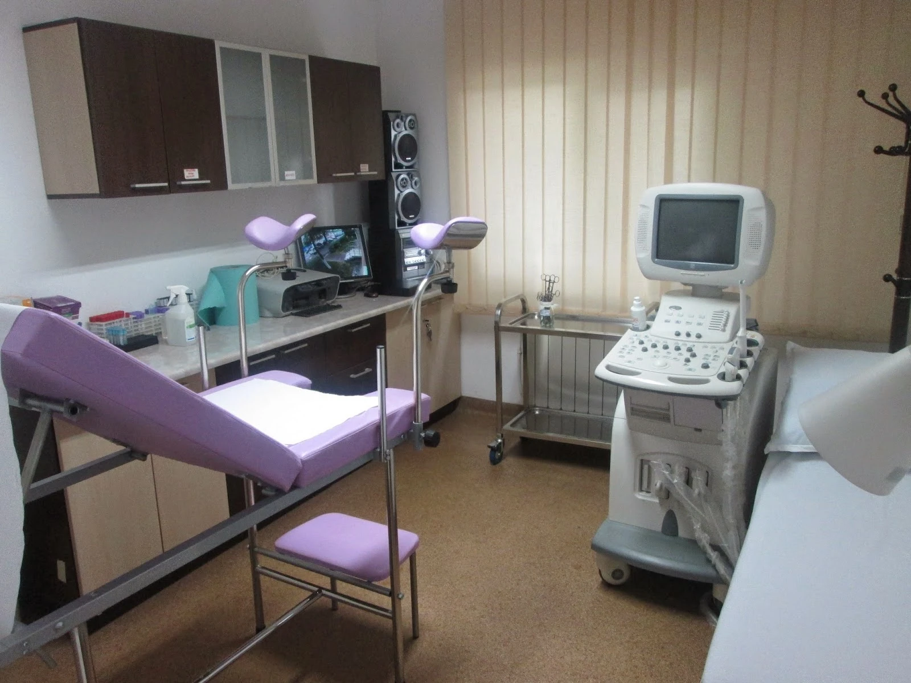
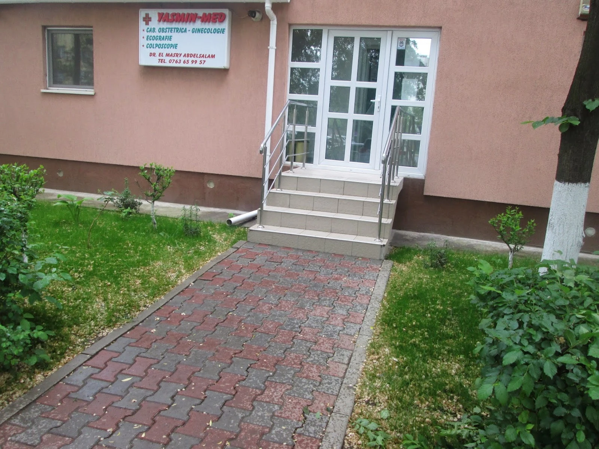
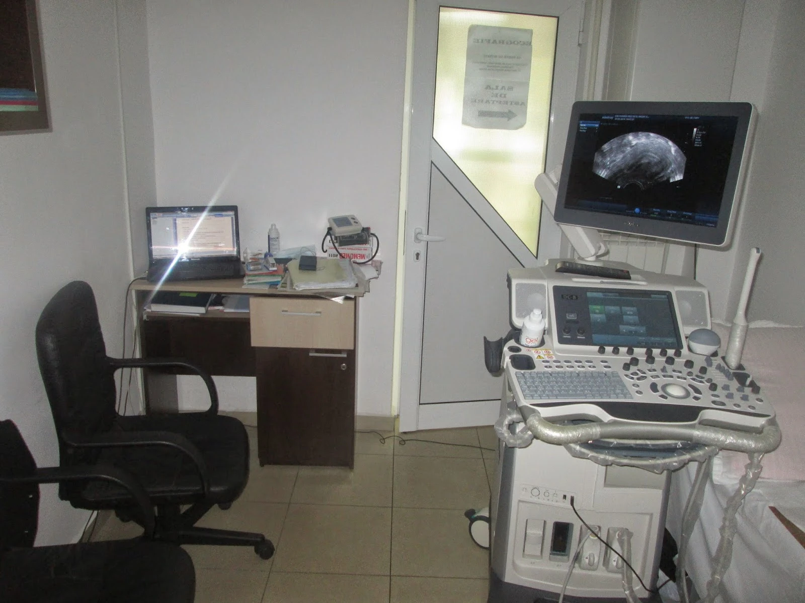
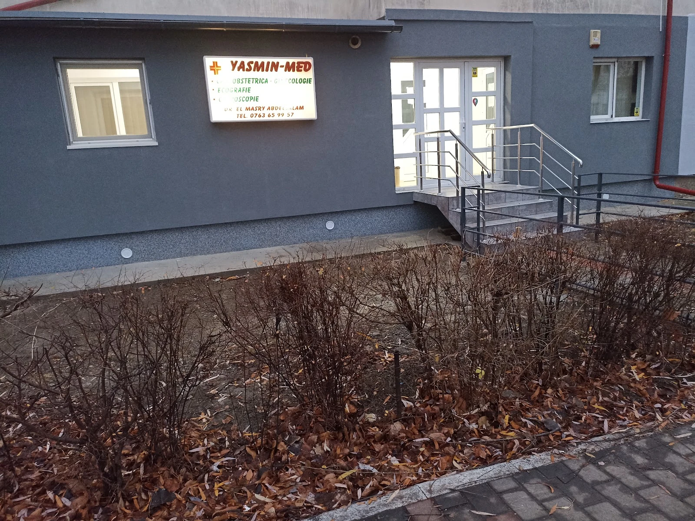
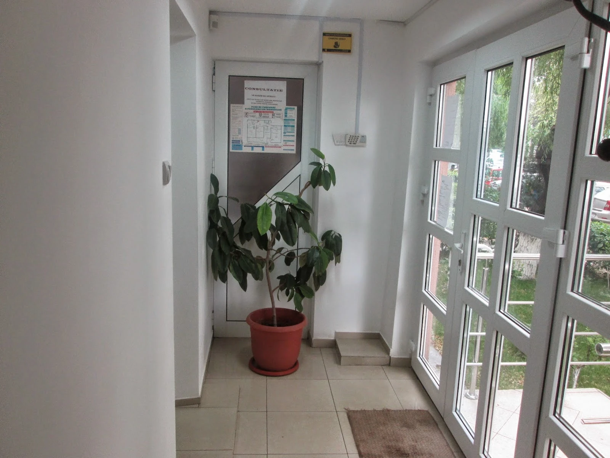
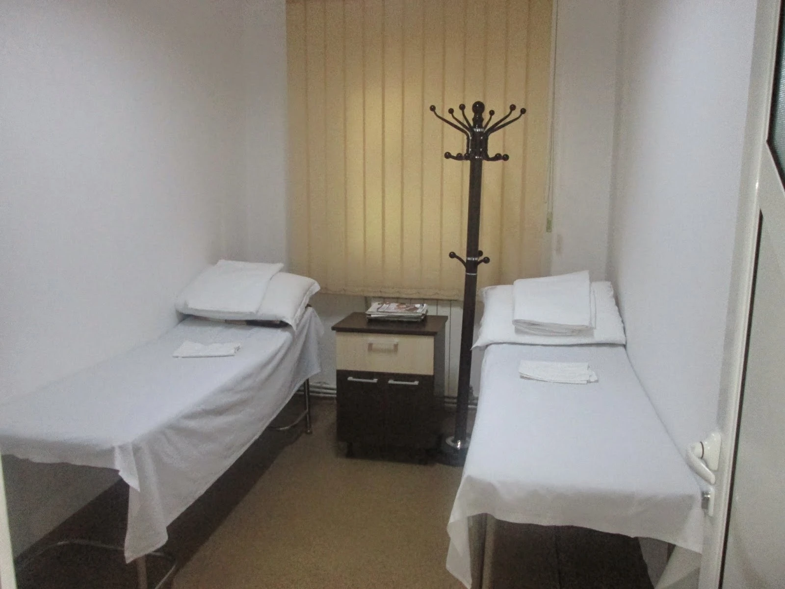

{{Obstetrică-ginecologie|Obstetrics and gynaecology|Obstetrícia e ginecologia}}
{{Consultație la cabinet, în cabinetul din fotografie.|A consultation at the practice, in the room shown.|Consulta no consultório, na sala da fotografia.}}
{{Obstetrică-ginecologie · Iași|Obstetrics and gynaecology · Iași|Obstetrícia e ginecologia · Iași}}
{{Cabinet de obstetrică-ginecologie, ecografie și colposcopie, pe Bulevardul Alexandru cel Bun 8, la parter. Ceri o programare fără să scrii nimic medical.|An obstetrics and gynaecology practice offering ultrasound and colposcopy, at Bulevardul Alexandru cel Bun 8, ground floor. You request an appointment without writing anything medical.|Consultório de obstetrícia e ginecologia, com ecografia e colposcopia, no Bulevardul Alexandru cel Bun 8, r/c. Pede a marcação sem escrever nada de médico.}}

{{Servicii|Services|Serviços}} {{detalii: de confirmat|details: to be confirmed|detalhes: a confirmar}}

{{Consultație la cabinet, în cabinetul din fotografie.|A consultation at the practice, in the room shown.|Consulta no consultório, na sala da fotografia.}}

{{Aparat de ecografie în cabinet.|An ultrasound machine in the practice.|Aparelho de ecografia no consultório.}}
{{Apare pe firma cabinetului. Fotografie: de adăugat.|Listed on the practice sign. Photo: to be added.|Consta na placa do consultório. Fotografia: a adicionar.}}
{{Cabinetul|The practice|O consultório}}
{{Intrarea e la parter, cu câteva trepte. Înăuntru: hol, cabinet și o încăpere cu paturi.|The entrance is on the ground floor, up a few steps. Inside: a hall, the consulting room and a room with beds.|A entrada é no rés-do-chão, com alguns degraus. No interior: hall, consultório e uma sala com camas.}}



{{Recenzii|Reviews|Opiniões}}
{{„Sunt o persoană foarte emotivă, însă domnul doctor a avut o răbdare extraordinară, mi-a explicat totul pe înțelesul meu …”|“I am a very emotional person, but the doctor was extraordinarily patient and explained everything in terms I could understand …”|«Sou uma pessoa muito emotiva, mas o senhor doutor teve uma paciência extraordinária e explicou-me tudo de forma que eu entendesse …»}}
{{„Cabinetul este curat, bine organizat, iar personalul este amabil și profesionist. Programarea a fost respectată.”|“The practice is clean and well organised, and the staff are friendly and professional. The appointment time was respected.”|«O consultório é limpo e bem organizado, e o pessoal é simpático e profissional. A hora marcada foi respeitada.»}}
{{Programare|Appointment|Marcação}}
{{Spui doar tipul de consultație și ziua care îți convine. Simptomele nu se scriu aici; se discută la cabinet.|You only say the type of consultation and the day that suits you. Symptoms are not written here; they are discussed at the practice.|Indica apenas o tipo de consulta e o dia que lhe convém. Os sintomas não se escrevem aqui; falam-se no consultório.}}
{{Duminica cabinetul este închis. Ora o stabilești la telefon: 0763 659 958.|The practice is closed on Sundays. You agree the time by phone: 0763 659 958.|O consultório está fechado aos domingos. A hora combina-se por telefone: 0763 659 958.}}
{{Contact|Contact|Contactos}}